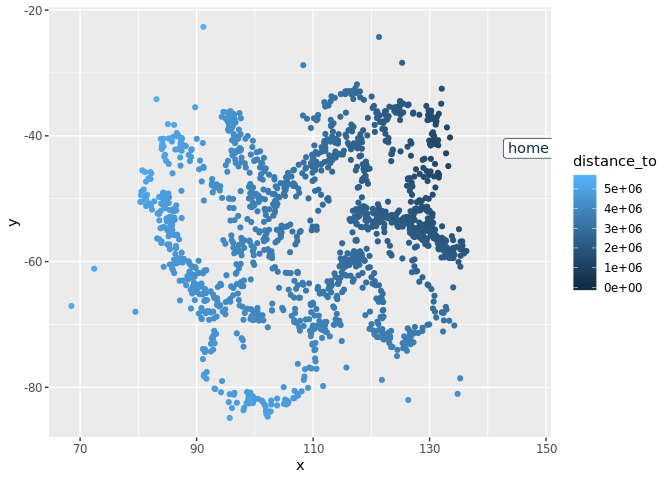
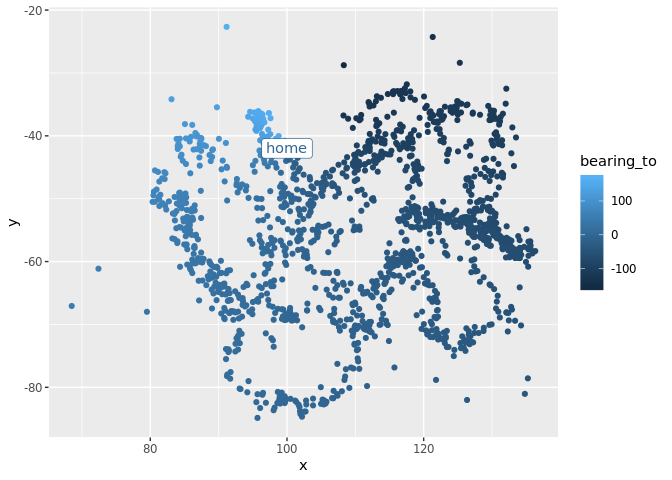
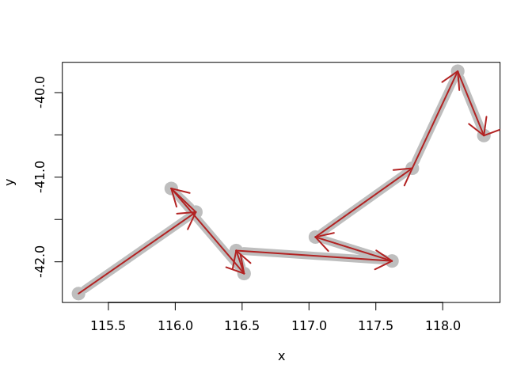

The goal of traipse is to provide shared tools for tracking data, for common metrics of distance, direction, and speed. The package includes the following functions which are always assumed to operate on input locations in longitude latitude, and input date-times in R’s POSIXt class.
-
track_distance()for distance in metres -
track_angle()for internal angle in degrees -
track_turn()for relative turn angle -
track_bearing()for absolute bearing -
track_time()for duration in seconds -
track_speed()for speed in metres per second -
track_distance_to()for distance to location -
track_bearing_to()for bearing to location -
track_intermediate()for interpolating locations -
track_query()also for interpolation, by finding locations within a given track arbitrarily (in-development)
Distances are always returned in metres, directions and angles are always returned in degrees. Absolute bearing is relative to North (0), and proceeds clockwise positive and anti-clockwise negative N = 0, E = 90, S = +/-180, W = -90.
Time is always returned in seconds, and speed in metres per second.
No complex data structures
Traipse works directly on longitude and latitude vectors as it is intended for use within other tools that work directly with data.
There is no capacity for providing nested data structures because this is trivially done by using tidyverse code like
or by arranging use of the functions in various ways. Track metric values are inherently window-like and in traipse padding value/s of NA are used to return an element for every input location.
Installation
You can install traipse from CRAN with:
You can install the development version from GitHub with:
Example
This is a basic example which shows you how to calculate ellipsoidal distance and turning angle for a data set of tracks.
First, calculate without any groupings - we definitely don’t want this for real work as there are three separate tracks within our data set identified by id. (No ordering is applied other than the order the rows occur).
library(traipse)
library(dplyr)
## there's no grouping here - we haven't gotten our data organized yet
trips0 %>% mutate(distance = track_distance(x, y), angle = track_angle(x, y))
#> # A tibble: 1,500 x 6
#> x y date id distance angle
#> <dbl> <dbl> <dttm> <chr> <dbl> <dbl>
#> 1 115. -42.4 2001-01-01 15:39:50 1 NA NA
#> 2 116. -41.4 2001-01-01 18:16:52 1 129435. 120.
#> 3 116. -41.1 2001-01-01 21:03:38 1 34632. 4.43
#> 4 117. -42.1 2001-01-01 22:09:41 1 120575. 13.1
#> 5 116. -41.9 2001-01-01 23:33:54 1 30560. 72.4
#> 6 118. -42.0 2001-01-02 01:25:12 1 97593. 25.6
#> 7 117. -41.7 2001-01-02 06:45:40 1 57005. 89.5
#> 8 118. -40.9 2001-01-02 10:01:26 1 108811. 159.
#> 9 118. -39.7 2001-01-02 13:49:59 1 130588. 23.8
#> 10 118. -40.5 2001-01-02 16:24:46 1 86066. 64.3
#> # … with 1,490 more rowsNow run a set of available metrics, but do it with respect to the grouping variable id.
metric <- trips0 %>% group_by(id) %>% mutate(distance = track_distance(x, y),
angle = track_angle(x, y),
turn = track_turn(x, y),
bearing = track_bearing(x, y),
duration = track_time(date),
speed = track_speed(x, y, date),
distance_to = track_distance_to(x, y, 147, -42),
bearing_to = track_bearing_to(x, y, 100, -42))
metric
#> # A tibble: 1,500 x 12
#> # Groups: id [3]
#> x y date id distance angle turn bearing
#> <dbl> <dbl> <dttm> <chr> <dbl> <dbl> <dbl> <dbl>
#> 1 115. -42.4 2001-01-01 15:39:50 1 NA NA NA 34.5
#> 2 116. -41.4 2001-01-01 18:16:52 1 129435. 120. -61.0 -26.5
#> 3 116. -41.1 2001-01-01 21:03:38 1 34632. 4.43 -175. 158.
#> 4 117. -42.1 2001-01-01 22:09:41 1 120575. 13.1 -167. -9.20
#> 5 116. -41.9 2001-01-01 23:33:54 1 30560. 72.4 108. 98.5
#> 6 118. -42.0 2001-01-02 01:25:12 1 97593. 25.6 -155. -56.7
#> 7 117. -41.7 2001-01-02 06:45:40 1 57005. 89.5 90.9 34.1
#> 8 118. -40.9 2001-01-02 10:01:26 1 108811. 159. -21.2 12.9
#> 9 118. -39.7 2001-01-02 13:49:59 1 130588. 23.8 156. 169.
#> 10 118. -40.5 2001-01-02 16:24:46 1 86066. 64.3 -116. 53.1
#> # … with 1,490 more rows, and 4 more variables: duration <dbl>,
#> # speed <dbl>, distance_to <dbl>, bearing_to <dbl>
metric %>%
ggplot(aes(x, y, cex= 1/angle)) +
geom_point() +
geom_path(col = rgb(0.2, 0.2, 0.2, 0.2))
#> Warning: Removed 6 rows containing missing values (geom_point).
#> Warning: Removed 2 rows containing missing values (geom_path).
metric %>%
ggplot(aes(x, y, colour = distance_to)) +
geom_point() + geom_label(data = data.frame(x = 147, y = -42, distance_to = 0),
label = "home")
metric %>%
ggplot(aes(x, y, colour = bearing_to)) +
geom_point() + geom_label(data = data.frame(x = 100, y = -42, bearing_to = 0),
label = "home")
Using the bearing and distance now reproduce the track as destination point segments.
plot(metric[1:10, c("x", "y")], type = "b", lwd = 10, col = "grey")
dest <- geosphere::destPoint(metric[1:10, c("x", "y")],
b = metric$bearing[1:10],
d = metric$distance[2:11])
arrows(metric$x[1:10], metric$y[1:10], dest[1:10,1], dest[1:10,2], col = "firebrick", lwd = 2)
Intermediate points require extra handling
The function track_intermediate() requires extra work as it inherently returns multiple variables (lon, lat, date-time). The output is a list-column of data frames, and if used within mutate(inter = track_intermediate(lon, lat, date)) then it will be stored along side the rows of the input data.
To use this we must unnest the data and treat the new columns as the output.
See the documentation for more examples.
Data are assumed to be sensibly organized
Note above that we provided a grouping ID for when we have separate trips within the same data set. There’s nothing to stop from calculating distances when the arrangement of records does not make sense, but this is your responsibility. If missing values are present, or times are out of order, or include zero-length time durations, or movement backward in time there aren’t any checks for that made in the traipse package.
The idea is for developers to be able to use these tools however they like but with an assumed consistent workflow.
We would like to have a simple core package to provide the most commonly used metrics. We assume geodist and geosphere as good examples of core packages for the underlying tool. These both apply the modern geodesic methods of C. F. F. Karney (2013) Algorithms for geodesics
Please note that this project is released with a Contributor Code of Conduct. By contributing to this project, you agree to abide by its terms.